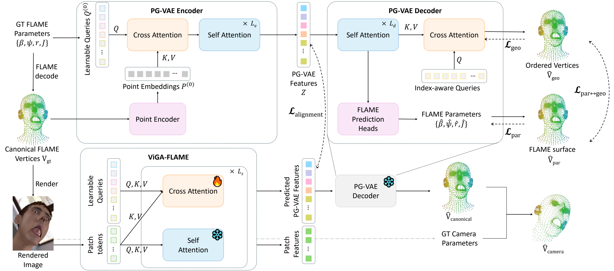
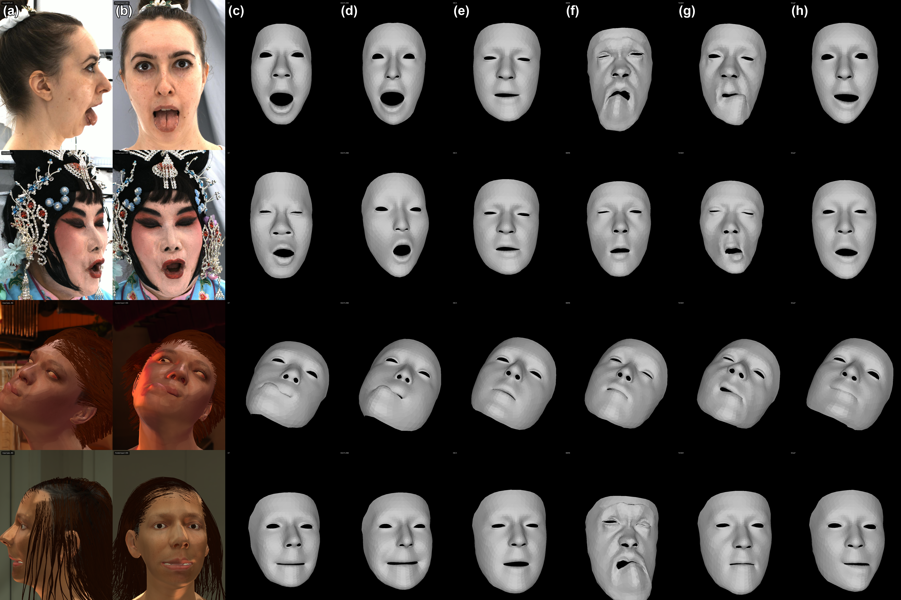

Method overview. We first introduce PG-VAE to learn a unified geometric representation from canonical FLAME surfaces. We then align its frozen representation with image features using the ViGA-FLAME.
Estimating 3D head expression from a single image requires linking visual appearance to facial geometry. We propose ViGA-FLAME, a two-stage framework that aligns semantic visual features with a structured geometric latent space. First, a Parametric–Geometric Variational Autoencoder (PG-VAE) learns a shared representation of canonical head surfaces and FLAME parameters, supporting both detailed surface reconstruction and interpretable parameter recovery. Supervision on geometry and parameters, together with consistency between the two decoding branches, connects surface detail with parametric structure. Second, a trainable adapter maps features from a pretrained semantic visual encoder, Sapiens2, into this latent space. Asymmetric attention allows the adapter to read contextual features while preserving the encoder's original semantic outputs. ViGA-FLAME brings together complementary cues from visual semantics and geometric structure to support coherent 3D head expression estimation under challenging conditions, including extreme expressions and profile views, outperforming competing methods.

Method overview. We first introduce PG-VAE to learn a unified geometric representation from canonical FLAME surfaces. We then align its frozen representation with image features using the ViGA-FLAME.

(a) Input image; (b) frontal-view display; (c) GT mesh; (d) ViGA-FLAME; (e) DECA; (f) SMIRK; (g) TEASER; (h) SHeaP.